- ↔: Go back/forward
- J: Slide list
- P: Printer mode
Getting artistic inspiration from technology
Keijiro Takahashi
keijiro.github.io/unite-asia-2019-deck
まず話を始める前に、今日のこのスライドの情報から。今から使うこのスライドは、 GitHub 上のこの URL で公開しています。後で見返したい部分があったら、こちらを参照してください。
それではまずは自己紹介から。僕の名前は高橋啓治郎です。 Unity Technologies Japan でエバンジェリストをやっています。元はコンソールゲーム業界の人間で、ソニーで１０年間、プレイステーション用のゲームを作るゲームプログラマーとして働いていました。ずっとゲームを作る仕事をしていた反動なのか、 Unity 社に入ってからは、ゲーム以外のプロジェクトに多く関わっています。仕事で関わることもあれば、個人活動として関わることもあったり、とにかく様々なかたちで Unity を使い続けています。
これは僕の日々の活動をアーカイブとしてまとめたものです。こんな感じで日々映像を作ったり、実験をしてみたりしては、その結果を SNS で共有する、というようなことを繰り返しています。こうして作ったものの一部が、会社の仕事に結びついたり、個人として引き受けた仕事のプロジェクトに結びついたりしています。
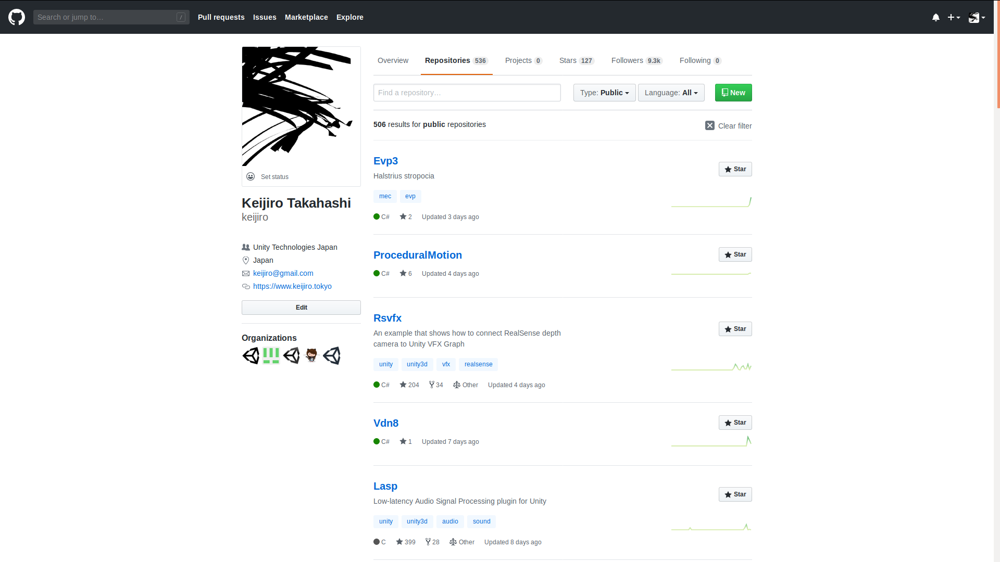
また、こうした作ってきたプロジェクトのほぼすべてを GitHub 上で公開しています。現在 500 個ぐらいのプロジェクトがこの上で公開されています。時間に余裕のあるときに覗いてみてください。
いくつかの面白いプロジェクトを紹介してみたいと思います。
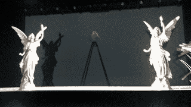


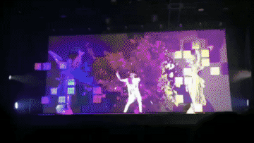
これは DMM VR Theater という施設でパフォーマンスしたときの映像です。いわゆる pepper’s ghost illusion と呼ばれるトリックを使って、ホログラムのように宙に浮かぶ映像を作り出しています。下のは OBA というダンサーさんとのコラボレーションでパフォーマンスを行ったときのものです。こういう風に、実在の演者と CG との融合を見せることのできる、とても面白い施設です。


 これは同じ施設です。ノイズ・ミュージックで有名な MERZBOW （メルツバウ）とコラボレーションしたときの映像ですね。 MERZBOW は、とにかくすごい強烈なノイズサウンドを作り出す方なので、映像の方もとにかく強烈なものになりました。さきほどのこれと比較すると、明滅の激しさが全然違いますよね。これは自分で操作していても頭がクラクラするような体験だったことを覚えています。
これは同じ施設です。ノイズ・ミュージックで有名な MERZBOW （メルツバウ）とコラボレーションしたときの映像ですね。 MERZBOW は、とにかくすごい強烈なノイズサウンドを作り出す方なので、映像の方もとにかく強烈なものになりました。さきほどのこれと比較すると、明滅の激しさが全然違いますよね。これは自分で操作していても頭がクラクラするような体験だったことを覚えています。


 こちらは、さきほどのとは違って普通のライブハウスでのパフォーマンスになります。上は RHC という二人組の EDM アーティストとのコラボレーション、下は FEMM という、これもまた二人組の女性アーティストとのコラボレーションになります。これらのアーティストとはライブビジュアルの提供という形でよくコラボレーションを行ってます。
こちらは、さきほどのとは違って普通のライブハウスでのパフォーマンスになります。上は RHC という二人組の EDM アーティストとのコラボレーション、下は FEMM という、これもまた二人組の女性アーティストとのコラボレーションになります。これらのアーティストとはライブビジュアルの提供という形でよくコラボレーションを行ってます。
こんな感じでいろんなプロジェクトに関わっているのですが、それらの原動力となっているのが、テクノロジー、技術の存在です。僕は常に何らかのプロジェクトを始めるとき、そこで何か新しい技術を使ってみよう、新しい技術を試してみよう、と考えるようにしています。その新しい技術を試していく過程で、新しい可能性を見つけ出していき、表現として仕上げていく、というアプローチです。こうして口で言うと何か偉そうなことをやっているように聞こえてしまいますが、実際にやっているのはとても簡単なことです。
ここでは、実際に僕が関わった２つの事例を紹介しながら、その過程でどんなことを考えていたのか、どのようにして発想を膨らましていったのか、その背景を解説していきたいと思います。
本題を始める前に、今お見せしたデモンストレーションについて、ざっと簡単に解説しておきましょう。
- RealSense Depth Camera
- Visual Effect Graph (VFX Graph)
今回のこのデモでは、２つの技術を使いました。ひとつは Intel の RealSense カメラ、もうひとつは Unity の新機能 Visual Effect Graph、通称 VFX Graph です。
RealSense カメラは、この三脚の上にある、これですね。このデバイスは、いわゆるデプスカメラと言うやつで、カメラから見た絵の色情報だけでなく、カメラからの距離の情報、デプスも取得できるというものです。
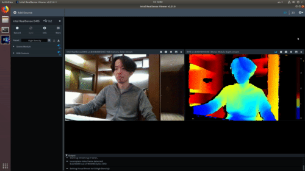
 これは RealSense SDK に付属のツール画面です。このように普通に平面の絵が撮れるだけでなく、このように三次元的な奥行きを持った３Ｄのボリュームデータとして映像を取得できます。精度は完璧ではありませんが、こんなに小さなデバイスで簡単に３Ｄのボリュームデータが取れるため、とても重宝しています。
これは RealSense SDK に付属のツール画面です。このように普通に平面の絵が撮れるだけでなく、このように三次元的な奥行きを持った３Ｄのボリュームデータとして映像を取得できます。精度は完璧ではありませんが、こんなに小さなデバイスで簡単に３Ｄのボリュームデータが取れるため、とても重宝しています。
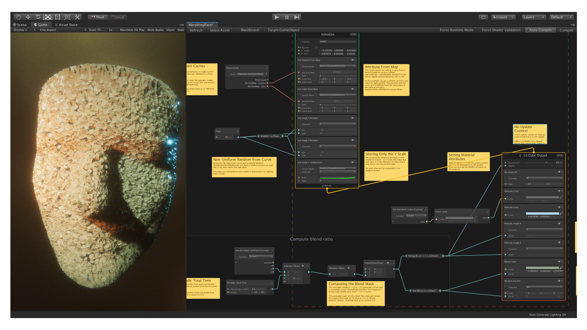
そして、もうひとつの技術、 VFX Graph ですが、これは現在開発中の、 Unity の新しいエフェクトシステムです。
これが VFX Graph を編集するためのツール、 VFX Editor の画面です。こんな感じで、ノードを線で繋いでいき、グラフを構築することでエフェクトをデザインできます。こうして作られたエフェクトは GPU を使って実行されるため、パフォーマンスも非常に優れています。従来のパーティクルシステムと比較して、使いやすいだけでなく性能も良いという優れものです。
今回新たに作ったのは、この RealSense から得た３Ｄのボリュームデータを VFX Graph に入力するための仕組みです。どのように実現しているのか、簡単に説明します。
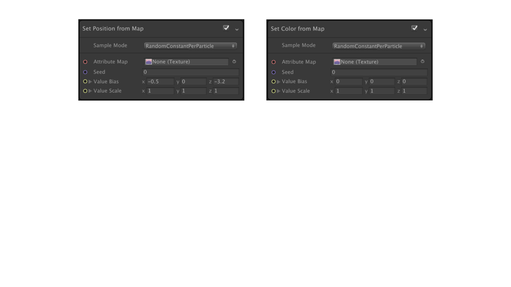
VFX Graph には、テクスチャに焼き込まれた、いわゆる「ベイク」された、位置や色の情報を使うためのノードが用意されています。この “Set Position from Map” や “Set Color from Map” がそれです。この仕組みを使うことで、大量の位置や色の情報を、テクスチャ、いわゆるアトリビュートマップを経由して、エフェクトで使うことができるわけです。
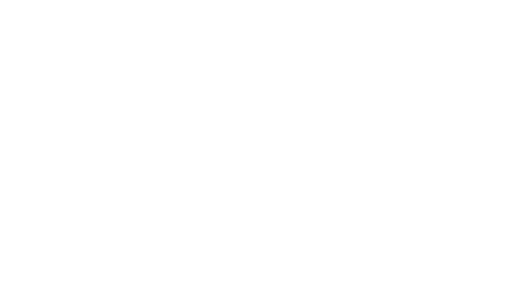
そこで今回僕は、この RealSense から取得したポイントクラウドの色情報と位置情報を、リアルタイムにテクスチャにベイクする仕組みを作りました。一度テクスチャにベイクしてしまえば、あとは VFX Graph に内蔵の仕組みで簡単に扱うことができます。
このように今回は、 RealSense から取り込んだ色や位置の情報をテクスチャに焼き込んで VFX Graph に取り込むという仕組みを作ったわけですが、このアプローチは RealSense 以外でも使うことができると思っています。
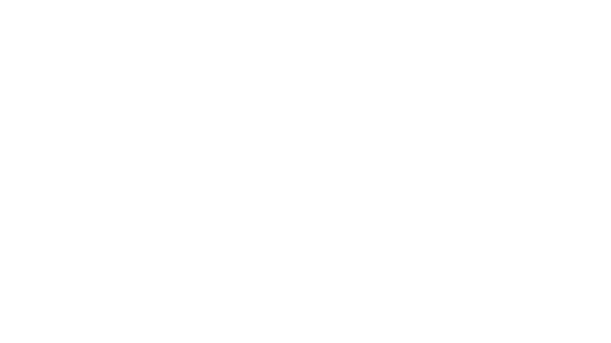
例えば……サーモグラフィーを使って温度の情報を取り込んで VFX Graph で視覚化する、なんて面白そうですね。あるいは気象情報を取り込んで視覚化するなんてのもいいかもしれません。人口密度などの地図情報の視覚化なんかも面白そうです。などなど。
Data visualization
とにかく何でも、大量のデータを Unity に取り込んで視覚化、いわゆるデータ・ビジュアライゼーションを行いたいという場合に、このアプローチは役に立ちます。エフェクトアーティストだけでなく、データの視覚化に Unity を使いたいと考えてる人にも、この VFX Graph は、ぜひ使ってみて欲しい機能だと思います。
Case 1. Geometry Shader Effects
まず最初にお話しするのは、ジオメトリシェーダーを使ったエフェクトの事例です。
この会場にも、 Unity のシェーダーを使ったことのある人は、少なからずいると思います。でも、ジオメトリシェーダーを使ったことのある人というのは、なかなかいないかもしれません。このジオメトリシェーダーというのは、他のシェーダーと比較するとちょっとマイナーな機能なんですが、これを使うことでとても面白いエフェクトが作れるんです。その話をしたいと思います。
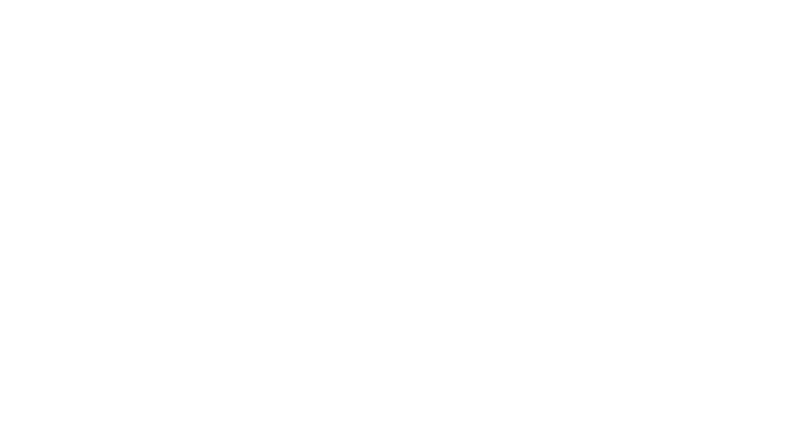
まずはシェーダーの基礎についてのおさらいです。
シェーダーを使ったことのある人ならば、まずバーテックスシェーダーというものがあって、次にフラグメントシェーダーというものがあって……というような、基本的な構造を理解していると思います。
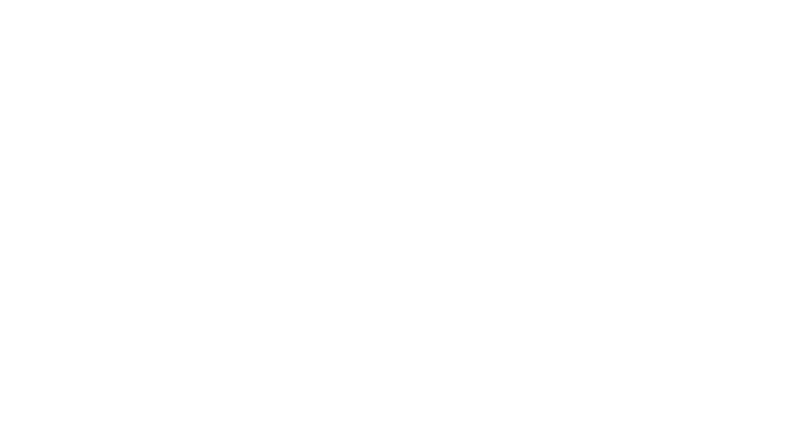
で、実は、この図のここに、ジオメトリシェーダーというのを挟むことができるんです。それで、ここに挟まったジオメトリシェーダー、いったい何をするものなんだろう？という話になるのですが……まずはその前に、バーテックスシェーダーとフラグメントシェーダーについて復習しておきましょう。
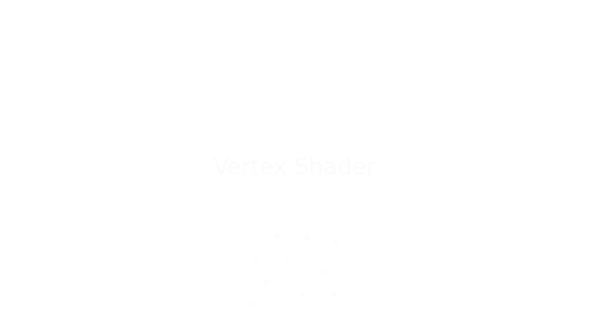
ざっくり簡単に説明します。バーテックスシェーダーは頂点を処理するシェーダーです。 CPU から与えられたメッシュの各頂点に座標変換を適用したり、ライティング処理を行ったりします。
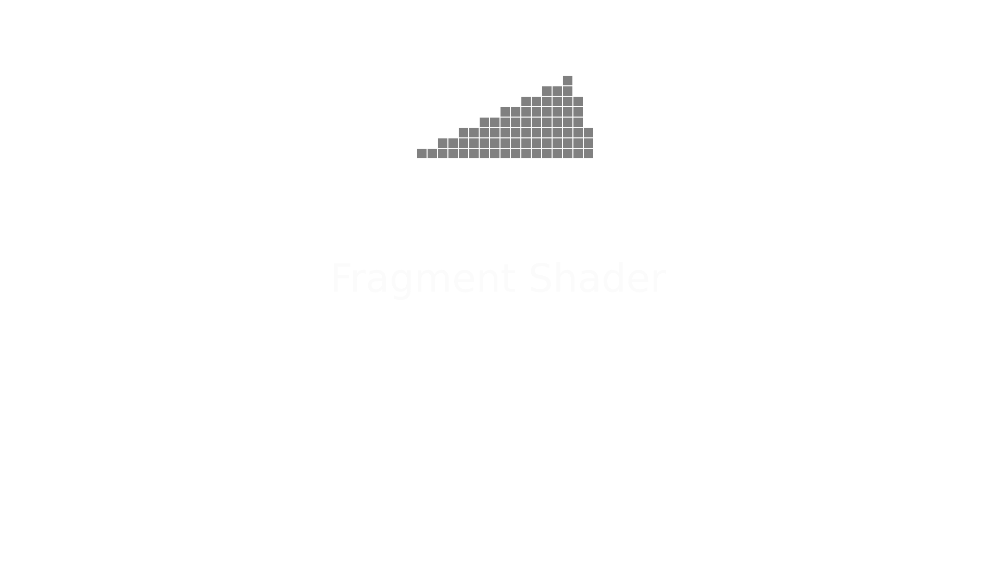
フラグメントシェーダーはピクセルを処理するシェーダーです。いわゆるラスタライズの処理が行われた後に、画面上を１ピクセルずつ塗り潰していくわけですが、ここで使われるのがフラグメントシェーダーです。１ピクセル１ピクセルそれぞれについて、どういう色で塗っていくのか決めるのが、このシェーダーです。ピクセルごとのライティング処理や、テクスチャマッピング処理などがここで行われます。
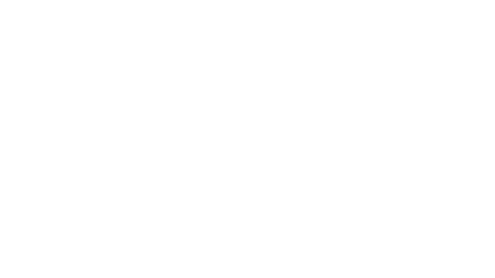
と、こんな形で頂点ごとの処理、ピクセルごとの処理が、各シェーダーで行われるのですが……
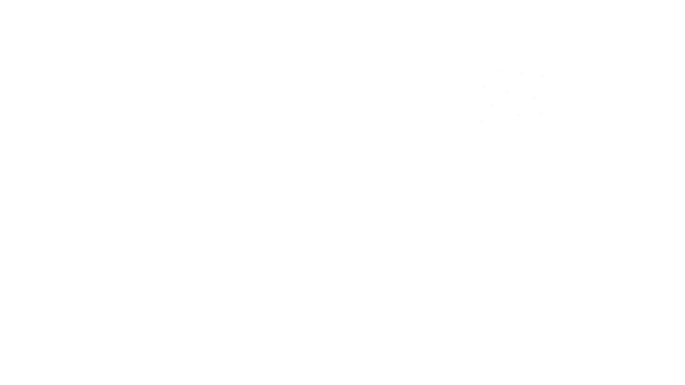
ここに特殊なエフェクトを加えることもできます。例えば……
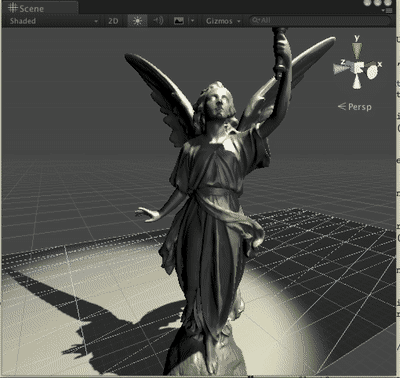
これは、バーテックスシェーダーの中で頂点の位置をいじってみた例です。バーテックスシェーダーは頂点を処理するシェーダーなので、このように頂点を移動して形状を変化させるようなエフェクトを作れるわけです。
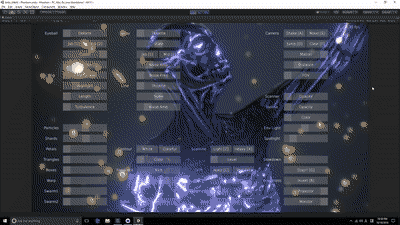
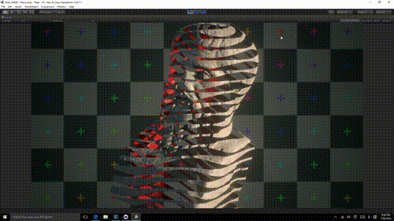
これは、フラグメントシェーダーのエフェクトの例です。左のは、ピクセルの明るさを変化させたもの、右のは、一部分のピクセルを消すことで物体が透けて見えるようにしたものです。フラグメントシェーダーはピクセルを処理するシェーダーなので、このように物体の一部分の色を変えたり消したりするエフェクトを作れるわけです。
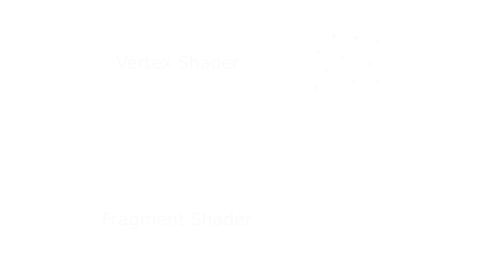
整理しましょう。バーテックスシェーダーは、頂点を処理の単位としていました。細かい表現はできませんが、頂点の移動して変形させるのとかは得意です。フラグメントシェーダーは、ピクセルを処理の単位としていました。変形などはできませんが、細かい模様の変化などは得意です。
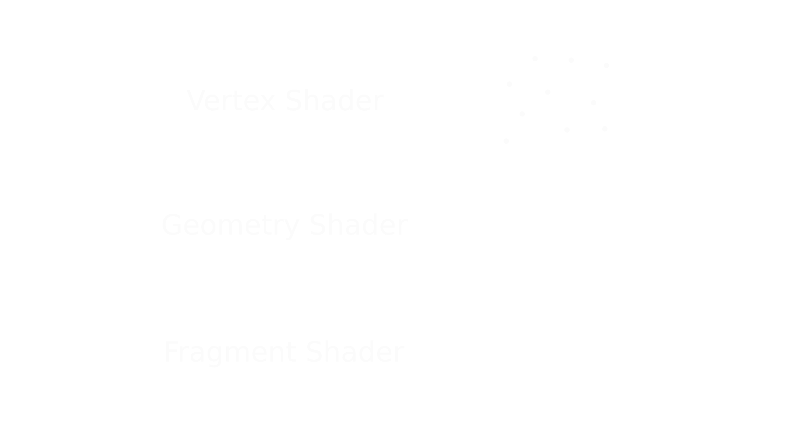
そしてジオメトリシェーダーはと言うと……三角形を処理の単位とします。頂点１個１個でもなく、ピクセル１個１個でもなく、三角形を入力として受け取り、三角形を出力します。そして、ジオメトリシェーダーの中では、この三角形に対してエフェクトを加えることができます。
では、三角形を処理の単位とすると、どんなエフェクトが作れるのでしょうか？
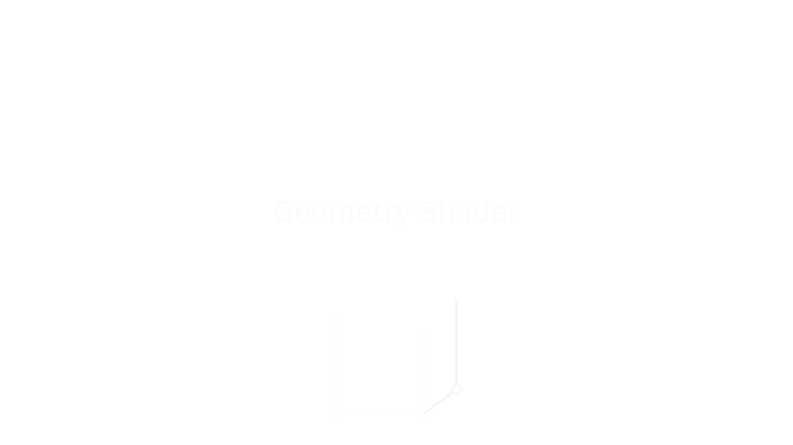
例えば、シェーダーに入力された三角形を変形してキューブにする、なんていうアイデアはどうでしょうか？ジオメトリシェーダーでは三角形の頂点を移動させるだけでなく、新しく三角形を追加することも可能です。三角形を四角形に変形したり、それに厚みを与えてキューブにする、なんてこともできるんです。
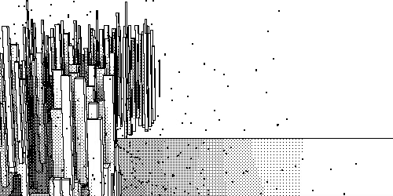
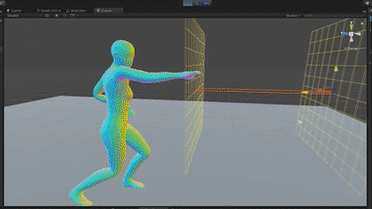
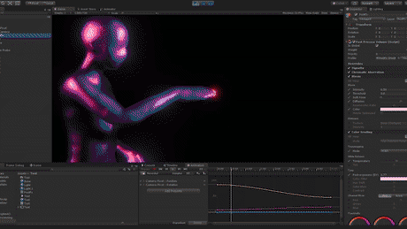
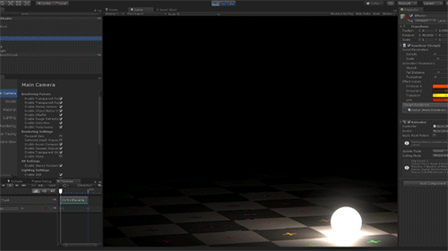
実際に、三角形をキューブに変形する、というアイデアをもとに作ってみたエフェクトがこれです。物体を異世界に転送するようなエフェクトですね。
このように、２つの平面をパラメーターとして与えて、その平面に挟まれた部分の三角形について、先ほど説明したような、三角形からキューブへの変形処理を適用しています。
実際には単純な変形ではなく、三角形のまま拡大してから、キューブに膨らんでいって、最後は縦に伸びて消える、というような、ちょっと複雑な動きをしています。また、変形と同時にキューブの縁（エッジ）を発光させることによって、見た目の豪華さを与えています。発光の処理はフラグメントシェーダーの中で行ってますので、ジオメトリシェーダーとフラグメントシェーダーの合わせ技、ということになりますね。
こんな感じで、ジオメトリシェーダーという技術は、僕に新しい発想を与えてくれました。バーテックスシェーダーでウネウネと変形する、とか、フラグメントシェーダーでピカピカ光らす、とか以外に、物体の形状を分解して、変形し、再構成する、ということを可能にしてくれたわけです。
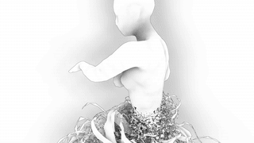
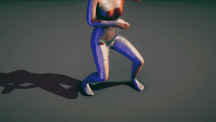
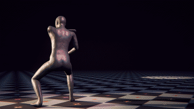
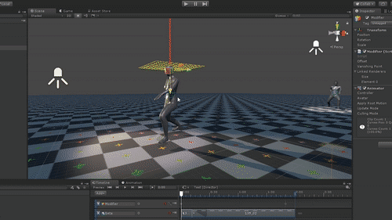
同じように、物体を分解し再構成する、という方向性で、いろんなエフェクトを作ってみました。上のは、三角形をキューブではなくリボン状の形状に変形させるものですね。物体が分解されていく様子がよく表現できていると思います。
下のは、三角形を短いリボンに変形させてから、特定の座標に向かって移動させる、というものですね。このエフェクトを逆再生させたものと組み合わせることによって、物体が別の座標へ転送されたような表現を作り出すことができます。
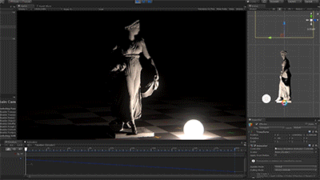
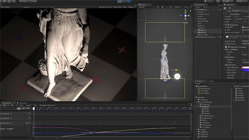
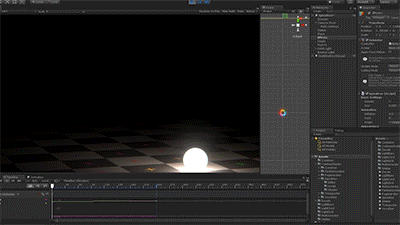
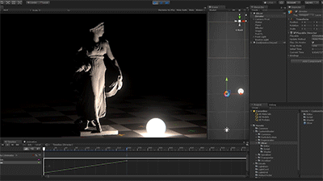
こちらは Unity の新しいグラフィクス機能である HDRP と組み合わせて、いろいろ作ってみたものです。物体を四角形の破片に分解するエフェクト、物体を崩壊させて再構築するエフェクト、竜巻のような渦に変換するエフェクト、物体をスライスして消すエフェクト、などなど。
このように、ジオメトリシェーダーを使うことで、これまでには作れなかったようなタイプのエフェクトを、いろいろと作れることが分かりました。こういう新しいもの発見をしたタイミングというのが、開発の中でいちばん楽しいです。

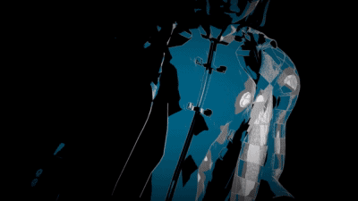
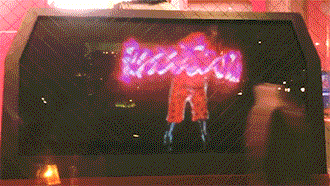
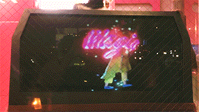
こうして作成したエフェクトは実際のプロジェクトでも使用しました。上のは FEMM のビジュアルで使用した例ですね。下のはイベントで展示されたインスタレーションに使用した例です。ユーザーのアクションに合わせてモデルが切り替わるという、簡単な操作が組み込まれています。こんな簡単な操作でも派手なエフェクトが発生すると、とても気持ちいいです。
Geometry Shader Instancing
ジオメトリシェーダーには、さらにもうひとつ面白い機能があります。 Geometry shader instancing と呼ばれるものです。簡単に説明すると、ジオメトリシェーダーを繰り返し実行するというものです。たったそれだけの機能ですが、これによって、大きな負荷をかけることなく、より複雑な形状を生み出せるようになります。
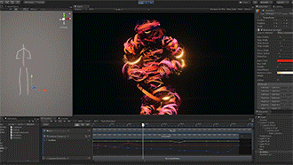
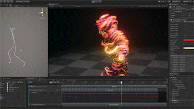
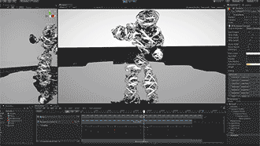
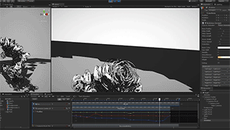
僕は、この geometry shader instancing を使えば、キャラクター１体の外見をまるまる生成することも可能ではないかと考えました。実際に試してみたのがこれです。
シェーダーに入力しているのは、この左に見える、骨格を構成するラインの形状だけです。その単純なラインを、ジオメトリシェーダーを使って、ウネウネと動くリボンのような形状に変換しています。それをインスタンシングによって増殖させることで、このようにキャラクター１体をカバーする複雑な形状へと発展させているわけです。
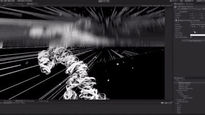
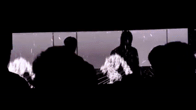
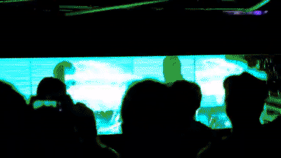
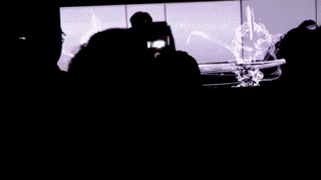
このエフェクトも実際のプロジェクトで使用しています。これは RHC のイベントの VJ に使用したときの映像なのです。 OLED を使った透過ディスプレイにこのエフェクトを映し出しています。このような透過ディスプレイは、コントラストの高い絵を使った方が綺麗に見えるということを知っていたので、このようなエフェクトを使ったのですが、まさにピッタリの組み合わせだったと思います。
まとめをしましょう。
バーテックスシェーダー、ジオメトリシェーダー、フラグメントシェーダーには、それぞれ異なった役割があり、それぞれ異なる種類の要素を扱います。
バーテックスシェーダーなら頂点をいじることできる、フラグメントシェーダーならピクセルをいじることができる。それぞれ異なる表現が可能でした。そして、ジオメトリシェーダーでは三角形をいじることができる。そこではどんな表現が可能だろう？ そう考えたところから、新しい可能性が広がっていきました。まさにインスピレーションを受けた瞬間が、そこにあります。
このように、ちょっとした機能の違い、役割の違いが、異なった表現の可能性を与えると言うことは、新しい技術を触っていると度々起こります。ですから、何か新しい技術が現れた時に、とにかくまずそれに触れてみて、何ができるのか確かめてみる、と言うのは、とても大切な姿勢であると思います。
Case 2. Deep Learning (Neural VFX with pix2pix)
次は、ディープラーニングをビジュアルエフェクトに使ってみたという事例です。
ディープラーニングや機械学習は、現在日本でも最も人気のある研究分野の一つです。ただこれについては、中国の方がもっと熱いかもしれませんね。みなさんの中にも機械学習の技術を実際に使っている人がいるかもしれません。あるいは、機械学習についてこれから勉強してみたいと考えてる人もいるかもしれません。
僕も機械学習の技術を何かしらビジュアルエフェクトに使ってみたいと考えていたのですが、なかなかきっかけが掴めないでいました。
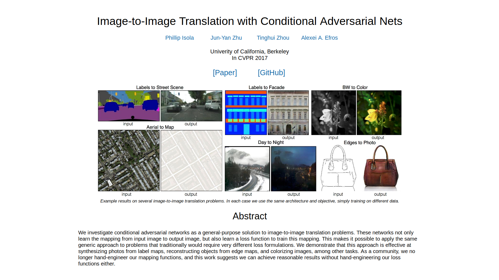
pix2pix は、ある種類の画像を、別のある種類の画像に変換するというディープ・ニューラルネットワークの一種です。
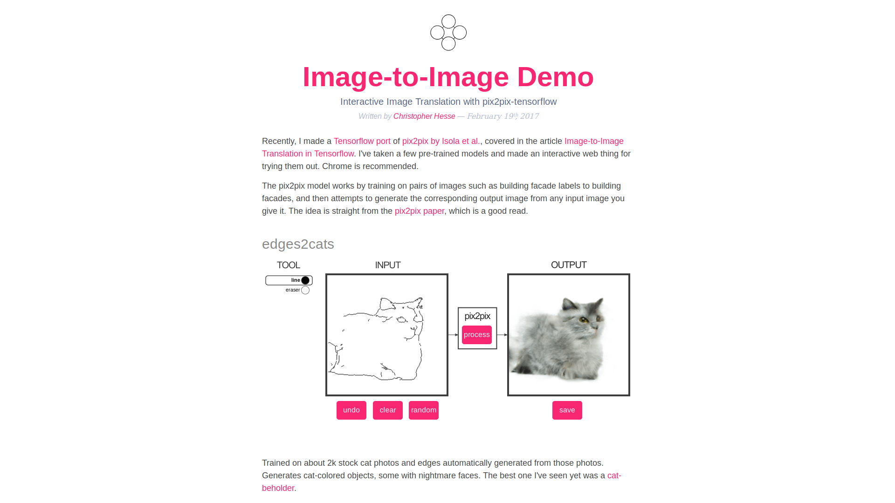
pix2pix の使用例として有名なのが、この、線画のスケッチをリアルな猫の画像に変換するというデモです。ウェブブラウザ上で試すことのできるデモが有名になりました。これを実際に遊んでみたことのある人もいるのではないかと思います。
これは実際の使用例を画像検索で拾ってきたものなんですが……まあ真面目に猫を描いて試してる人もいれば、ぜんぜん関係無いものを描いてる人もいますね。ぜんぜん関係無いものを描いても、無理やり猫っぽいものに変換してくれる、というところに、今までの技術には無かった新しさがあると思います。不思議な人間臭さというか、知性のかけらのようなものが、そこに感じられます。
この、線画をリアルな猫に変換するというモデルは、このように「線画の画像データ」と「猫の写真の画像データ」のペアを大量に用意し、それを学習させることによって実現されています。
同じ要領で画像のペアを大量に用意すれば、別の使い方も可能です。これは色を使った単純な塗り潰しの画像から、リアルな街の風景を生成するモデルですね。これは航空写真から地図を生成するモデル。これはリアルな建物を生成するモデル。これは白黒写真に色を付けるモデル。これは昼間の写真を夜に変換するモデルですね。などなど。何か決まり切った特定の用途だけでなく、データさえ用意できれば様々な種類の問題に適用できるというのが、機械学習の素晴らしいところです。
この pix2pix は、それなりに処理負荷の高いニューラルネットワークなのですが、どうやら最新の GPU を最大限に利用すれば、リアルタイムに動かすことも可能らしい、という話を耳にしました。もしこれを Unity 上でリアルタイムに動かすことができれば、これまでにない、劇的に見た目を変化させるようなエフェクトを作ることができるかもしれない……と、僕は考えました。
そこでまず、前の猫のデモを、単純に Unity 上の C# スクリプトで実装してみることにしました。いちおう動くことには動いたのですが、一枚の絵の変換に５分ぐらいかかるという、非常に低速なものでした。この時点では、まだ実用的ではないですね。
ただ、これを実装した時点で、ディープニューラルネットワークの仕組みは非常に単純なものであるというのが分かったので、最終的には何とかなるだろうという自信が出てきました。簡単に言ってしまえば、ディープニューラルネットワークとは、膨大な数の掛け算と足し算をひたすら繰り返しているだけです。掛け算と足し算の得意な GPU を使って最適化すれば、大幅に高速化することができるはず……と考えたわけです。
で、まずは単純に GPU 化してみました。左のがそれなんですが、これだけで約３秒まで高速化されています。５分から３秒まで縮まったんだから、すごいですよね。さすが GPU です。
その後、細かな最適化のテクニックを加えていって、最終的には0.04秒にまで高速化することができました。ここまでくれば、もうリアルタイムに動いたと言ってもいいでしょう。
ちなみに、どういう高速化のテクニックを使ったのか、ここで詳しくは説明しませんが、資料だけ紹介しておきたいと思います。これは NVIDIA による Direct Compute を使った際の最適化のテクニックについて解説したスライドです。ここで紹介されているようなテクニックを中心に最適化を施して行きました。興味のある方はこちらを参照してみてください。
リアルタイムに動かすことができるようになったので、さっそくインタラクティブなデモを作成してみました。基本的にはウェブブラウザ上で動いていたデモと同じですが、こちらは線画を描くのとほぼ同時に結果を見ることができるようになっていて、インタラクティブ性が向上しています。
自分の描いた絵がリアルタイムに変化するのを見るというのは、なかなか新しい体験です。強力な GPU を持っている方は、ぜひ実際に自分の手で試してみてください。
pix2pix のランタイム部分がリアルタイムに動くようになったので、次は新しいモデルの学習に挑戦してみることにしました。学習については Unity 上ではなく Google の Colaboratory というサービスを使ってクラウド上で動かすことにしました。
それで、いろんなモデルを自作してみたのですが、自分でも猫のモデルを作成してみたり、同じ要領で犬のモデルを作成してみたりしました。人の顔なんかも試してみました。完璧ではないのですが、人の顔の形状を捉えて変換していることがわかりますね。最後のは、イラスト素材集を学習させて、線画からイラスト風の画像を生成できるようにしたものです。

 ここまでのデモは、人の手で書いた線画を変換するものでした。次に、 Unity でレンダリングした絵も同じように変換することができるのではないか？と考えました。それで作ってみたのがこのデモです。 Unity でレンダリングした画像を線画に変換して、そこから pix2pix で最終的な画像を生成しています。
こう、言葉で表すとなんとなく上手くいきそうなアイデアなんですが、実際には、なかなかうまくいかなかったです。ただ、普通の人間の感性では生まれてこないような絵が、次々に機械から生み出されてくるというのは、なかなか面白いです。この胸像を無理やり猫に変換する例などは、まるで悪夢か幻覚か見ているような感じです。
下の例は、猫の３Dモデルのアニメーションを、リアルな猫に変換する、というのを試してみたものです。これはなかなかうまくいっていると思います。もしかしたらこの手法に実用性があるのかもしれない、と感じさせてくれます。
ここまでのデモは、人の手で書いた線画を変換するものでした。次に、 Unity でレンダリングした絵も同じように変換することができるのではないか？と考えました。それで作ってみたのがこのデモです。 Unity でレンダリングした画像を線画に変換して、そこから pix2pix で最終的な画像を生成しています。
こう、言葉で表すとなんとなく上手くいきそうなアイデアなんですが、実際には、なかなかうまくいかなかったです。ただ、普通の人間の感性では生まれてこないような絵が、次々に機械から生み出されてくるというのは、なかなか面白いです。この胸像を無理やり猫に変換する例などは、まるで悪夢か幻覚か見ているような感じです。
下の例は、猫の３Dモデルのアニメーションを、リアルな猫に変換する、というのを試してみたものです。これはなかなかうまくいっていると思います。もしかしたらこの手法に実用性があるのかもしれない、と感じさせてくれます。
pix2pix Next Frame Prediction
次は、さらに別の pix2pix の応用を試してみることにしました。 pix2pix を next frame prediction 、つまり、あるフレームの次のフレームを予測するためのモデルとして使用する、というものです。
仕組みについて簡単に説明します。まずは任意のビデオをフレームに分解します。いわゆるイメージ・シーケンスですね。そして、連続する２つのフレームをペアにして、 pix2pix に学習させます。こうして出来たモデルは、任意の画像を与えると、その次のフレームを予測して生成してくれる、というものになります。
あるフレームを pix2pix に与えると、次のフレームを作ってくれる。そのフレームを再び pix2pix に与えると、次の次のフレームを作ってくれる。それをまた pix2pix に与えて……というようにフィードバックを繰り返すことで、無限に続くアニメーションが生成できるのです。
このアイデアはもともと、ディープラーニングを使ったアート作品で有名な Mario Klingemann 氏が実験していたものです。これは花火の映像を学習させたモデルです。リアルな映像を生成できているわけではありませんが、予測できない絵が無限に生み出されていく様子がとても面白いと思いました。
このモデルの面白いところは、元の映像とは何にも関係無い画像を与えたとしても、それを無理やり映像として解釈して、次を予測していってくれるというところです。
例えば、さきほどの花火の映像を生成するモデル、ここに花火とは何の関係もない人の顔の画像を与えたとします。そうすると、人の顔を無理やり花火として解釈して、花火の動きへと繋げていってくれるわけです。
このように、ある画像に本来とは異なる解釈を与えて加工していくというのは、今までは人間にしかできなかった仕事です。それを機械的に実現することができて、しかもリアルタイムで動くというのは、とても新しい可能性であると思いました。


 これは実際に僕が作ってみたモデルを動かしたものになります。この水面の映像や、海の波の映像などは、かなりリアルに再現できていることが分かります。初期状態として画像を一枚与えているだけなんですが、そこから無限に続く映像を作ってくれます。
左上のは、電車の先頭にカメラを置いて録った映像を学習させたものです。これはまったくリアルではありませんが、動きの特徴を捉えて無理やり再現しようとしている様子が面白いと思いました。
これは爆発の映像、これは花火の映像、これは色のついた煙が混ざり合う映像ですね。どれもリアルというわけではないのですが、動きの特徴を捉えて映像にできているのが面白いです。
最も奇妙な結果を得られたのが右端の例です。これはダンサーが踊っている映像を学習させたものなのですが、なんだか得体のしれないモヤモヤを生成し続けるモデルになりました。こういう、何の絵なのか分かりそうで分からない状態を作り出せるのも面白いです。
これは実際に僕が作ってみたモデルを動かしたものになります。この水面の映像や、海の波の映像などは、かなりリアルに再現できていることが分かります。初期状態として画像を一枚与えているだけなんですが、そこから無限に続く映像を作ってくれます。
左上のは、電車の先頭にカメラを置いて録った映像を学習させたものです。これはまったくリアルではありませんが、動きの特徴を捉えて無理やり再現しようとしている様子が面白いと思いました。
これは爆発の映像、これは花火の映像、これは色のついた煙が混ざり合う映像ですね。どれもリアルというわけではないのですが、動きの特徴を捉えて映像にできているのが面白いです。
最も奇妙な結果を得られたのが右端の例です。これはダンサーが踊っている映像を学習させたものなのですが、なんだか得体のしれないモヤモヤを生成し続けるモデルになりました。こういう、何の絵なのか分かりそうで分からない状態を作り出せるのも面白いです。
こうして作ったモデルをリアルタイムに操作して、ライブビジュアルとして使えるシステムを構築してみました。スライダー操作によって２つのモデルを混ぜ合わせて繋いだり、ノイズを混ぜることで映像に不規則な変化を与えることができます。
このようにインタラクティブなインターフェースを作ることで、人間の感性とか、人の手の動きとか、そういった複雑性をこのシステムの中に組み込むことができます。そうすることで、単に映像を無限に作り出す装置ではなく、ライブビジュアルのための表現の装置として使うことが可能になるわけです。

 実際にライブパフォーマンスの中で使ってみた映像です。音楽に合わせて手動で映像を操作しています。
僕が AI を使ったアートとして、イメージしていたのはまさにこのような感じで、 AI が全自動で何かを生成するのではなく、人間による操作の先に AI が存在している、と言う構図です。
これは実際に使ってみると分かるのですが、スライダーを手で動かすだけで、画面上の絵が無限に変化していく……というこの体験は、とてもユニークなものです。このような単純な操作系で pix2pix を制御することができる、と発見できたのは、このプロジェクトの最大の成果かもしれません。
実際にライブパフォーマンスの中で使ってみた映像です。音楽に合わせて手動で映像を操作しています。
僕が AI を使ったアートとして、イメージしていたのはまさにこのような感じで、 AI が全自動で何かを生成するのではなく、人間による操作の先に AI が存在している、と言う構図です。
これは実際に使ってみると分かるのですが、スライダーを手で動かすだけで、画面上の絵が無限に変化していく……というこの体験は、とてもユニークなものです。このような単純な操作系で pix2pix を制御することができる、と発見できたのは、このプロジェクトの最大の成果かもしれません。
さて、そろそろまとめをしましょう。この事例を通して伝えたかったことは２つあります。
Find a way to learn a new technology
まず最初は、新しい技術を学ぶ方法についてです。僕は以前から機械学習の技術を勉強してみたい、機械学習の技術を自分で使ってみたい、と考えていました。ですが、なかなかその機会をつかめずにいました。
それが、 pix2pix という技術と出会ったことによって、一気に道が開けていきました。それは、 pix2pix が、僕が活動している分野……コンピューターグラフィックスとかビジュアルエフェクトとかですね、それらとの接点を多く持っていたからです。僕が元から持っている知識や経験を生かして、勉強を効率的に進めることができたのです。また、僕の普段の活動の中ですぐ使うことができたので、やる気を維持しやすかった、というのもあります。
このように、なかなか勉強することのできなかった技術について、自分と身近な部分での接点を得たことによって、一気に自分のものになっていく……というこの流れ、僕は何度も経験したことがあります。
ここにいる皆さんもそれぞれ、本当は勉強してみたいと思っていることがあるんだけれど、なかなか手をつけることができない……そんな悩みを、なにかしら持っているんじゃないでしょうか。
そういったときに、いきなり分厚い教科書を買って、最初から最後まで読んでみようとしても、なかなかうまくいきません。自分の知識や経験、自分の活動との接点を見つけ、まずはその領域から自分のものにしていく……これは新しい技術を学ぶ際に使える、強力な戦略のひとつです。
Neural VFX can be realtime!
もう一つ伝えたかったのは、機械学習技術を使ったビジュアルエフェクトがリアルタイムに動くということです。それを使える時代が既に来ています。
僕は今回、 pix2pix の最適化に取り組んだことによって、これが既に実用的な技術であるという確信を得ました。特別に強力なコンピューターを用意しなくても、そこそこの性能のコンピューターがあれば、そこそこの速度で動いてくれます。今後 GPU のスペックが進化を続ければ、それは更に使いやすいものになるでしょう。
この、機械学習を使ったビジュアルエフェクトという分野には、新しい可能性がまだまだたくさん残されています。もし、今日この話を聞いて面白そうだと思ったならば、ぜひこの新しい分野に挑戦してみてください。新しい才能がここに現れることを世界は期待していると思います。